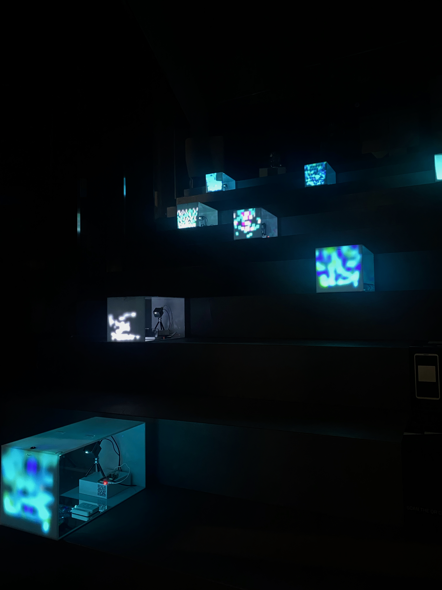
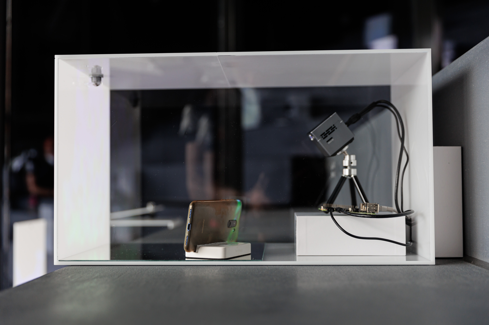
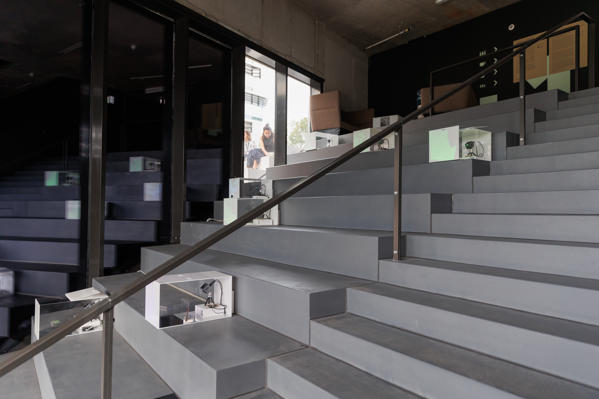
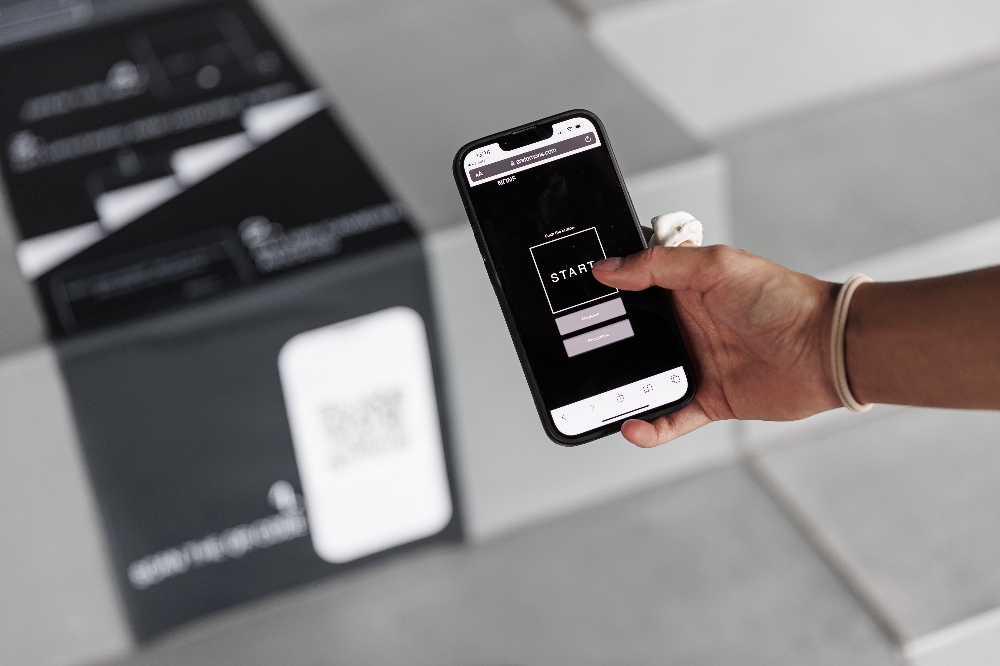
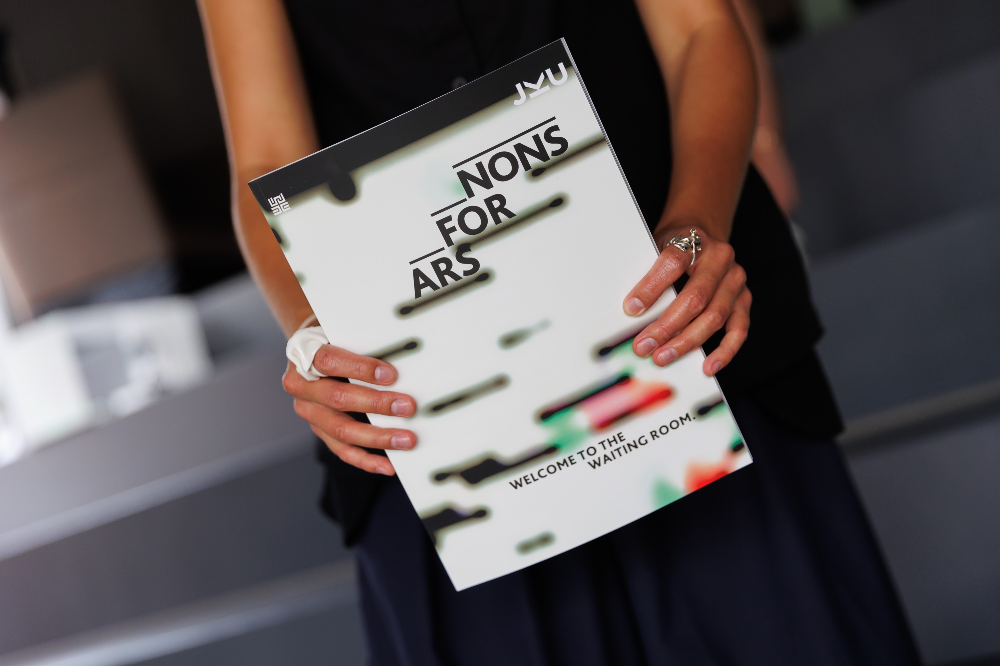
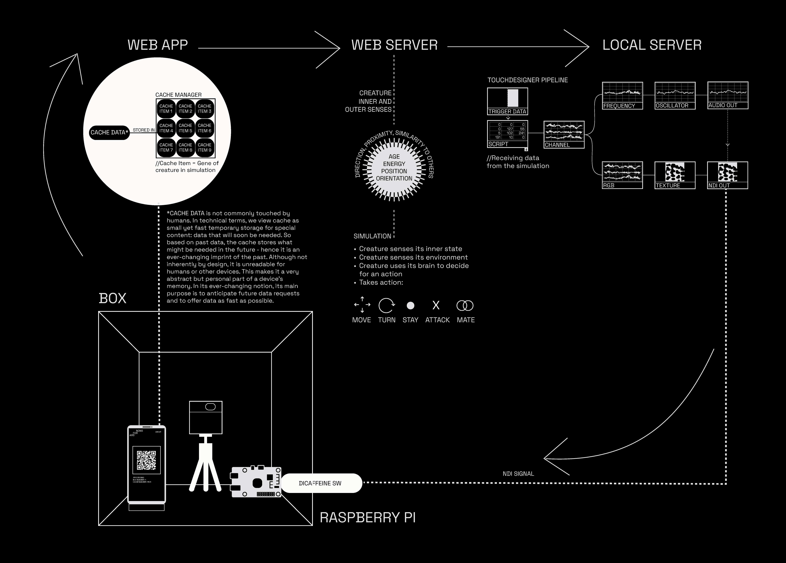
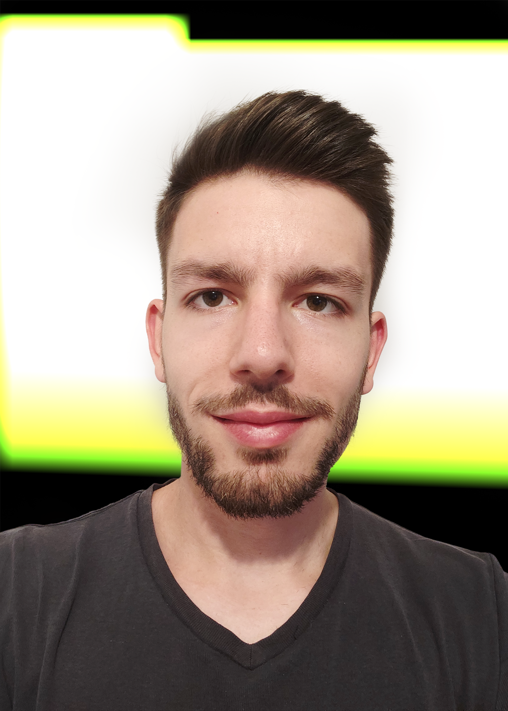
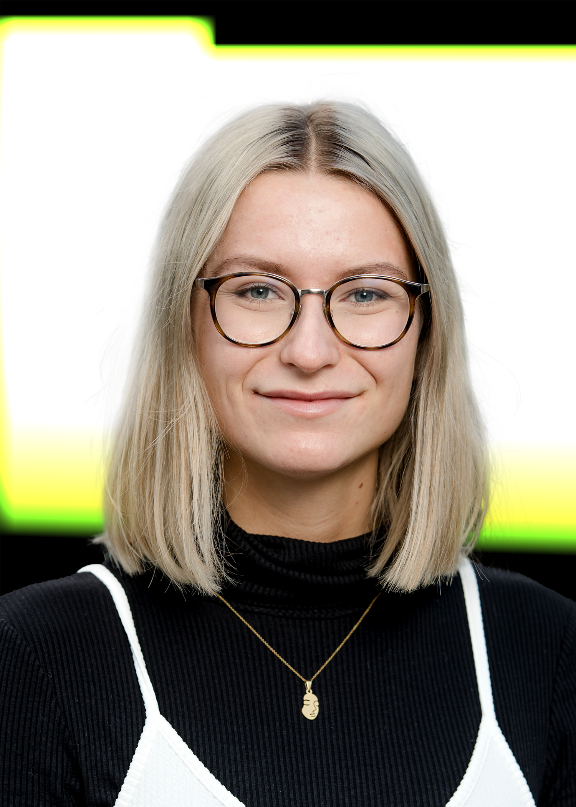

The Initiative Art for Nons proposes interventions to decenter the human in the arts and the everyday. Art for Nons creates art not only with technology and biology, but ultimately for the two.
Founded by two artist-researchers, Lea Luka Sikau (DE/UK) and Denisa Pubalova (CZ) and their more-than-human companions, it explores in-between spaces that got rendered invisible as art spaces and opens them up for multisensory, nonhuman interaction.
In times when the devastating effects of anthropocentrism are ubiquitous, our vision is to let the human collide with narratives that are not meant for their consumption. We fuse speculative fiction with nonhuman agency to create interactive audio-visual installations for technology and biology alike. In our artistic research process, we reassemble the relations between machines, fungi and humans to make the art world less of an ouroboros and more of an octopus.
As a more-than-human initiative, we got commissioned by the Ars Electronica, the Linz Institute for Technology, the Reeperbahnfestival and the concert incubator TONALi Hamburg.




The installation Ars for Nons creates art for technology – which essentially is a part of society already. Art is not made by nonhuman technology for humans, but with technology for nonhumans.
It asks why and how to create art for other-than-human beings. Ars for Nons creates a space for nonhumans, Nons, to immerse in Ars, an interactive art piece. The installation is conceptualised for the group of Nons that are most likely to be present at the Ars Electronica Festival: smartphones. Every phone inhabits their own white cube to conceive and contribute to an art installation consisting of sound, vibration, and imagery. In the meantime, the accompanying human waits. Ultimately, the installation stretches the human perspective, deconstructing and rethinking our relationship with art.

Is there anything else left to say within an installation for nonhumans, from one human writer to another human reader? At the fringes of an art installation that is not meant for you, we try to console you on these pages.
This magazine is an experiment. While nonhumans are in touch with art, you can touch artistic research processes. The commissioned essays are contextualizing our thoughts around this installation - from posthuman theory to animal art.
Creating an artwork for nonhumans - in this case smartphones - starts with a human’s inquiry. Discussing the entanglement of art, science, and technology, we wondered how we could acknowledge technology as part of our society. The art industry constantly showcases art created by technology for humans. But what would it mean to create art for nonhuman technology instead? For the objects that usually create art for us…
DOWNLOAD MAGAZINEIs there anything else left to say within an installation for nonhumans, from one human writer to another human reader? At the fringes of an art installation which is not meant for you, we try to console you on these printed pages.
This journal is an experiment. While nonhumans are in touch with art, you can touch artistic research processes. The commissioned essays are contextualizing our thoughts around this installation - from posthuman theory to animal art.
To create an artwork for nonhumans - in this case smartphones - starts with a human’s inquiry. It all began when four members of the Festival University within the Ars Electronica Festival 2021 met. Discussing the entanglement of art, science, and technology, we wondered how we could acknowledge technology as part of our society. For forty years now, Ars Electronica Festival has showcased art created by technology for humans. But what would it mean to create art for nonhuman technology instead? For the matters that usually create art for us…
Why and how create art for nonhumans?
This was our initial question. What started off as a thinking model ultimately developed into the art installation you are seeing or hearing right now, while waiting for your phone. On our path to approximate the „why“ and „how“, we arrived at challenges of more fundamental nature. These were four overarching ones:
Collision of Binaries: How to make an art installation that is queering binaries by letting them collide (human / nonhuman; art space / staircase; sound / image; lesezirkel / research journal)?
Nons of the Art World: Exceeding the smartphone as nonhuman technology, there is a broader implication within our provocative term non. Who are the nons? A non-human, a non-visitor or somebody that is not represented and targeted by the way we practice art nowadays? How could we reveal ethical issues present in the art market’s socio-economic frameworks via this model?
Personification Trap: Throughout the entire development process, our team’s highest priority was not to personify nonhuman technology. Projecting one’s concepts onto somebody other than one’s own is as easy as it is problematic. Being bound to think in human terms, we necessarily lack the nonhuman perspective. Consciously working with this gap, we avoided assumptions about the phone’s moment with art.
Adaptation of Human Behaviour: No matter how much we tested and tried our installation beforehand, we cannot foresee the human’s reaction to it. How did you interact with the installation? Did you place your phone in a box and follow the instructions exemplarily? Or, do you use the boxes next to the couches to charge your phone? Humans waiting for phones next to humans waiting for their tools to be ready again. How do you negotiate the fact that you can only see a fraction of the installation, as it is not made for you? 50,000 years after the first cave paintings, you find yourself back in Plato’s cave. Does it make you perform differently in this exhibition?
This journal is a reflection on how these four inquiries can be thought through and to which avenues they lead our writers. The articles intend to start off a discourse with you, the human in this scenario. Each of them explores the engagement with nonhumans. You can read them in any order - from parrots over fungi to electric circuits and back.
As a child I longed for the color purple, not only in the literal pigmentation, but as an abstraction, as a comfort blanket, as a wellspring of fascination. I searched for purple daily, starting each morning by opening my front door, yelling out for purple into a landscape of mostly greens and browns. I opened cupboards, the dishwasher, desk drawers, looking for her. It was an obsession bordering on delusion, but I guess the type of delusion that is accepted as the temporary irrationality of a small child making sense of a chaotic world. Some kids have imaginary friends, I had the purple deity. To me, purple was everything that was good about this world – she was bold, brazen, deep, a bit rare, holding both cool and warm properties. Purple sounded like a heartbeat during a hug, ear to chest. She smelled like the sweet ferment of leaf litter in the fall. She tasted like butter tea. She was yin and yang, the beckoning of adventure and the plushness of a bower. I was a little bowerbird, and purple was the glint in the eyeshine of life.
Bowerbirds are a family of birds, ptilonorhynchidae, with a distribution throughout Australasia. The males of this species are known to craft elaborate, color-coordinated shrines in order to impress potential mates, both female and male. The center of the shrine is a bower, or den, woven with grasses and twigs, taking the male bowerbird years to build. Inside the deep bower is a bed of soft moss, and placed in and around the bower are carefully selected items such botanicals, fungi, beetles, stones, bones, shells, dung, charcoal, and even human made materials like plastics and cloth. The construction of the bowers as well as the selection of the decorative materials vary based on the individual bird. Some bowerbirds might gravitate towards airy displays of bright orange flowers with matching polypores, others might make a trail of iridescent blue-green beetle wings, others still might amass a moody complex of black rocks and deer dung. Similarly intricate are the selection of songs the males sing, often mimicking calls and sounds of other animals. All of this is done to attract a mate. Typically, the mates are female, but there are records of same-sex courtship as well (MacFarlane et al., 2007). A bowerbird can visit the courtship arenas of numerous birds to find what she likes best. She may hear a unique or enticing call that makes her want to visit a bower to learn more about a particular bird’s aesthetics and capacities. If the design moves her, if her preferences for certain colors, aromas, or moods elicit a nascent desire, she will mate in the bower. Same-sex encounters are likely driven by the same attractions, but perhaps also provide males opportunities to learn artistry from one another.
If I were a bowerbird, any courtship ritual would only be successful if purple was at the heart of the love nest. Sure, I could be enticed by a stage bedecked in emerald, ruby, lapis lazuli, or onyx, but those would not vibrate my senses into resonance as purple would. I would not feel the vagus nerve tremble between my stomach and heart, and my nervous system would not flash with hot profundity in its fibers. I would not choose his gametes, we would not mingle chromosomes. Only a theater of purple love could ensure my commitment. Like some spooky action, the purple deity would be both summoner and summoned, the source of pleasure and the pleasure itself.
As a child, I was transfixed by a perception of purple that went beyond aesthetics but actually mingled with my sense of self and a feeling of unbounded time. The quality of this experience was primordial, elemental. Later in life, similar sensations led me to becoming a professional mycologist. In mushrooms and other fungi, I saw reflecting back at me our shared evolutionary history, the human position in the landscape of beings, and my own queer ambiguousness. We were strangely familiar; our cells probed the limits of the other, finding no resistance. I can compare this feeling to witnessing great art, especially music. Like hearing a genre for the first time and feeling kaleidoscopic refractions of nostalgia and possibility; the paradoxical feeling that a song is, singularly, for you, but also created by someone who understands you. You cannot be taught to recognize that feeling, it simply happens. A bowerbird may never have before seen an iridescent carpet of beetle wings surrounding piles of plump, teal berries, but she knows she loves it when she sees it. Taste can be shaped through exposure and culture, but the origins of this capacity are located in deep evolutionary time, in the pre-human, pre- mammalian world.
To nurture and protect even small fragments of livability, we must get to know the lives of others, human and nonhuman. The Anthropocene collates projects of erasure, and we forget that we need companions. What might it take to bring us back into remembrance?_1
I use the word “attunement” in this essay to refer to attempts to get to know, through alignment, how others express themselves in the world. I’m particularly interested in forms of alignment that refuse Cartesian dreams of minds in contact. Getting to know living beings other than humans has been blocked by scholars’ desires to “talk” with those beings, or at least to make Enlightenment kinds of meaning and value together with them. Yet, there are other ways in which living beings express themselves, and instead of expecting them to meet our standards of communication and status, we can expand our own repertoires of listening and attending. For many animals, and most plants and fungi, what I will call “form” is an essential expression of being. Consider a tree: the shape of its trunk and branches tells its life story—of sun or shady neighbors, of seasonal rains, diseases, fungal companions, herbivory, or human pruning. With warmth and rain and sun, new branches grow quickly and spread widely; in the shade, they straighten or curve toward the light._2 But shape is not enough. Color, texture, turgidity, sound, and smell (or, more broadly, chemical sensitivities) are also elements of what I am calling “form.” “Form” is in quotation marks here as a reminder of the specificity of this use, which exceeds shape.
_1
The project on which this paper reports formed part of Aarhus University
Research on the Anthropocene
(https://anthropocene.au.dk/),
supported by the Danish National
Research Foundation.
_2
See Francis Hallé, In Praise of Plants, trans. David Lee (Portland, OR: TimberPress, 2002);
Andrew S. Mathews,
“Landscapes and Throughscapes
in Italian Forest Worlds:
Thinking Dramatically about
the Anthropocene,” Cultural
Anthropology 33, no. 3 (2018): 386–414.
As I traverse the roads of the city I live in on my bicycle, I observe the greenery of trees that have finally blossomed. People start to get out of their homes and fulfil the tasks for the day. Adults with garments suitable for their labour. Children with backpacks on their way to the last weeks of school. The modest wildlife present in the urban area is active as well. Mostly seagulls, storks, and the occasional band of pigeons searching for food.
Along with these inhabitants, machines are present too. The streets undergo various renovations and cabling sits around, momentarily becoming part of the landscape. We must not forget the devices carried by each person or the thousands of invisible instruments that run the city, from semaphores to house appliances. These are perhaps the most numerous of all entities.
I cannot help but wonder involuntarily what all of this ecosystem “feels”, collectively. I try to give up my sense of reality, entering in some form of unbiased credulity to pose the question frankly. How does it feel to be others? What are the experiences of plants, animals and machines? What do they sense or think as I am passing? The exercise is - I presume - exceedingly common. Particularly for children who are generally prone to asking scientific and philosophical questions instinctively to understand the world.
As I arrive at my studio, I sit down and contemplate a task I have delayed far too long. My plen plotter - a device I use to print sketches - has broken and is in dire need of repair. I have been meaning to repair it for several months now, but time never seemed fit to sit down and replace the damaged microcontroller. While I proceed with the task and feel the pointy and intricate patterns present in the circuitry at my fingertips, my mind comes back to the musings I indulged in while cycling. I begin wondering again. What, if any, would be the perceptual reality of circuits?
Assuming that these tiny pieces are capable of sentience, what would their experience be? What would they see at their level, operating with electrical signals that traverse faster than any signal we as humans can process. What type of art would they create and value? What would something sublime or beautiful be for them?
The premise is inherently absurd since we know and understand how these devices function. These are not sentient beings. Motors, solders, resistors and capacitors do not have consciousness. Nevertheless, the imagery triggered by such thoughts seemed to be stimulating enough to try and explore them, allow- ing me to leave behind any sense of accuracy or scientific rigour.
Theater likes to surprise its audience. But can theater also surprise itself?
I once visited a dance performance in which a small, but very visible, black fly flew through the completely white set to the surprise of the people on stage. The audience rejoiced at the unexpected encounter. However, the dancer, covered entirely in white paint, refused to notice the fly. They tried to cover up its presence, but in contrast to their intention, the fly grew in the audience’s perception and became a fundamental part of the evening.
Years later, I saw an open-air performance of Genet‘s Zofen which remains similarly present in my memory. The actresses were declaiming text in the usual theatrical, over-excited voice until a dog in the immediate vicinity of the open-air stage picked up on their tone. Their barking drowned out the actresses until they lowered their tone, which I felt benefitted the performance.
I also remember a performance of Marlene Monteiro Freita‘s energetic Bacantes, not only because of the sensational brass and dancers, but especially because of an unplanned dramaturgical highlight of the evening. A spotlight began to burn; it suited the play so well that the stagehands waited a moment to call the fire department. An unforgettable evening.
For me, the best thing about theater is its glitches. What affects me most are moments when things get out of hand, when someone doesn‘t know what to do with the text, or when force majeure disrupts the plan of the production. When the performance falters, the audience collectively holds its breath. There is a sense of joint responsibility for how things could proceed. The potential of a social utopia pervades the theater space.
Sometimes peeling a pomegranate can sound like the crackling of a small fire. Or glass spinning. Or the universe exploding.
How do we listen for texture? Normally when we think of texture, we think of something we can touch — something haptic or visual, definitely something external to us, like a chenille or corduroy cushion, where we either sense or see how much the material might give. To listen for texture means to de-emphasize a dominant sensorial system over others. Can one sense gain some qualities of another and undo the senses’ strict separation? How do we create frisky synesthetic intermingling?_1 Suddenly texture is also inside us. It can’t be seen or touched but felt. To listen for texture also qualifies what “hearing” might mean.
_1
I have not read up on the
latest scientific studies on
synaesthesia in either adults
or children; my observations
are rooted in my own embodied experience of what I know
is sensorially possible or
believe could be possible,
which is that sweet spot
between imagination and
graspable thereness, which
is also my definition of reading.
If art is genuine it is creative revolution regardless of who looks at it_1
A crowd of apes and monkeys sit clustered upon a box gawping and grinning and staring at a canvas. They’ve seen nothing like it; or they are bored by it; or they raise their arms in delight at the general hullabaloo. They are of a number of sorts, baboons, gibbons and others; all however have the painting as the primary focus of their attention or reaction. What is on the canvas is hidden from view, all we see is the gilded side of a carved frame. Gabriel von Max’s turn of the century comedy in oils, The Jury of Apes_1 points at the trade of the art critic, utter monkey business, but also at the viewer of art, a mug, an enthusiast, or, in the stare of the ape, turned to address the viewer through half-closed lids, a rare specimen in itself. For apes to look at a canvas makes the pretensions of those who look with a mind to judge also minds to be judged, or at least, to be sniggered at.
Pliny the Elder’s Natural History_3, a book which places painting and sculpture amongst an inventory of animals, plants, and minerals, gives us another story along these lines. In a competition between two painters in trompe l’oeil technique, Zeuxis and Parrhasius, face off in front of a crowd. The first artist pulls away the curtain protecting his work to reveal the most perfectly rendered bowl of fruit, so lucidly real in fact that a flock of birds immediately descends upon it and starts to peck away the paint. Impressed, Parrhasius stirs, but does not move. He simply stands and watches. The annoyed Zeuxis demands that he remove the curtain from his canvas. The second artist does indeed reveal his painting, but by stating that he has no curtain to remove, that it is a painting of a curtain. This painting has deceived the eyes of an artist not a mere bird. Parrhasius wins the competition and perhaps brought to a temporary close a current in art which is only just re-emerging, art for animals.
Art for animals is art with animals intended as its key users or audience. Art for animals is not therefore art that uses animals as a substrate or a carrier, nor as an object of contemplation or use._4 (Needless to say given these criteria it does not fall into the category of transgenic art, with its all to frequent tendency to animal abuse and naive sensationalist celebration of genetic engineering.) It is not art that, like The Jury of Apes, that depicts animals for human viewers, or that incorporates animals into living tableau, but work that makes a direct address to the perceptual world of one or more non-human animal species. There are only a very small number of works that make such an address. This essay will make a brief survey of them and then go on to discuss their implications. Where it differs from Pliny’s tale is in that it works, not on the level of successful imitation, of setting up perception as a means by which one is duped, but in rendering perceptual dynamics as both somewhat more irresolved and more powerful.
_1
Lazlo Moholy-Nagy, cited in,
Sibyl Moholy-Nagy, Moholy-Nagy, experiment in totality, 2nd Edition,
MIT Press, Cambridge, 1969, p.87
_2
Gabriel von Max, The Jury of Apes, 1889
_3
Pliny, Natural History, books
33-35, trans. H. Rackham,
Loeb Classical Library, Harvard
University Press, Cambridge, 2003, p.309 (book XXXV, section XXXVI,)
_4
Notable examples would be Jannis Kounellis’ installation, Horses, Rome, 1969, in which a dozen horses were stabled in the Galleria
L’Attico, setting up a situation in which the physical presence, movement, smell and palpability of the horses goes straight to matter
conjugated by the multiple kinds of expectation and viewing accentuated in art systems.
Paolo Pivi’s work follows somewhat in this trajectory but with an emphasis on exoticism and absurdist conjuncture, an alligator covered
in whipped cream, zebras transported to a snowy landscape, a leopard prowling amongst plastic replica cappuccino cups
I grew up on an old farm in the French countryside, about an hour west of Paris. After school, I spent my days building sheds and tools and caring for sheep, bunnies, and chickens. My interest in machines brought me to study mechanical engineering after college. But years later, while a researcher at MIT, my fascination for animals led me to shape my Ph.D. towaard interspecies interactions and nonverbal communication. I have worked on systems that recognize panda vocalizations, augmented incubators to establish vocal communication between parent birds and their eggs, and approaches to better listen to animal voices in zoo soundspaces. It is in this context of my work on Animal-Computer Interaction that I started working with Parrots.
Some people say cats teach children the importance of consent. I would add that parrots can teach researchers the importance of relationships. I first met Sampson in 2017 when my friend Gabriel Miller, a preservation technologist at the San Diego Zoo, gave me a tour of the zoo behind the scene. I was privileged to have private encounters with several vibrant individuals. I met Crikey, the kookaburra, accompanied by his caregiver Becca who gave us a demonstration of his vocalization. I learned that he sometimes converses with his sister, who lives across the zoo. I also met with a cheetah, giraffes, flamingos, pandas, and a small colony of Andean cocks of the rocks introduced by their familiar Eric, who knows the art of whispering in the birds‘ ears and sings along with them.
But Sampson was something else. This 18-year-old hyacinth macaw (Anodorhynchus hyacinthinus) only had eyes for Jenna. Until a few years prior, Jenna Duarte had been Sampson‘s primary caregiver, and you could see he didn‘t forget her. Jenna is a bird lover, but as per the zoo rules, caregivers are on a rotation schedule to ensure that animals become familiar with different humans and do not create too deep a bond with their keepers. Over the years, Jenna had witnessed the bird‘s love for music and was the one who came up with the idea of providing him with a way to play music by and for himself.
不到園林，怎知春⾊如許？
— 湯顯祖, 牡丹亭 _1
K Allado-Mcdowell: I was lost in a forest.
GPT-3: The forest wanted me to be lost in it.
— Pharmako-AI
You have to accept being a shape-shifter to the end, a chimera until the bitter end — even in ethics, heart
of a sheep and maw of a wolf, and no crocodile tears.
— Baptiste Morizot, Ways of Being Alive
∘˚˳°∘°the f˚˳°a ˚˳∘°l ˚∘∘ l∘˚∘˳°∘° — encountering “wan-wu 萬物”
it is on our way back to the cabin located in the midst of the family-grown plantation on faial island
where i find myself dissolved into manifolds of sensuous living forces. early evening after the soft
spring rain passing by as temporal beings, the path formed by the lush vegetation melts into glowing
greens in sunlight. the plants are entangled in a transient state of (re-)formation — they melt, then
find their shapes again in kaleidoscopic fractals, pulsing, shimmering from within. my vision is filled
with different shades of green: light green, velvet green, concave green, moisture green, feathery green…
until a moment when i feel that my body starts to melt with them, dissolving into nothingness.
this nothingness is so vast, vast but not empty —
i (a
m
fa
1
l
ing
)
.
during the ‘fall’ i discover a spider web sculpted in front of our window. the web reflects sunrays into forms of rainbow. i look closely, observing how each string carries a different path and colour. these paths shine in light, permeating through infinity. suddenly, a stream of consciousness ripples through my body: our worlds are made of webs that are interwoven by various sources of strings. when i fall, there are always webs overlapping into beings that carry me away from the ground, to touch me, to hold me. there is thus no ‘ground’ but the fall, and the unaccountable webs. i am falling, giving myself to everything that surrounds me and within me. i am carried away by the webs, and gradually become one of the tiny translucent threads that fabricate the worlds.
“I am dying for an iPhone“ – You might think that is a mantra of a consumer yearning for the most iconic electronic gadget of the twenty-first century. It is not. In 2010, eighteen workers, all of them aged between 17 and 25, attempted suicide at Foxconn, the main supplier of Apple. They threw themselves off the worker dormitory in despair over and in protest against the harsh factory discipline. About one million supply chain workers assemble iPhones, iPads, Macs or Play Stations at Foxconn’s manufacturing plants. The great majority of them in China. The suicides at Taiwanese-owned Foxconn in Shenzhen, China, lifted the otherwise anonymous supplier companies of the big brands out of anonymity and brought their appalling working conditions into the public eye: low wages, compulsory overtime, lack of health and safety precautions, abusive treatment of teenage student interns, and managerial repression of workers’ attempts to press demands for securing rights guaranteed by employment contracts and national labour laws (Chan et al., 2020).
Can humans have romantic relationships with objects such as mobile devices?
Forming a strong romantic attachment or bond with objects or structures, also known as objectophilia, is not a novel phenomenon. The first known case of a romantic relationship with an inanimate object goes back to Eija-Riitta Eklöf, who fell in love with the Berlin Wall in 1979. Eija-Ritter Eklöf changed her name to Eija-Riitta Eklöf-Berliner-Mauer (engl. Eklöf-Berlin-Wall) and considered herself as a widow after the wall’s destruction in 1989. More recent examples of objectophilia include Erika Eiffel who wedded the Eiffel Tower in 2007, Jodi Rose who married a 600 year old French bridge in 2013 and Michele Köbke who claims to be in a romantic relationship with a Boeing 747 since 2014. The present commentary examines philosophical differentiations and distinctions between human-object attachment and romantic relationships and discusses relevant ethical implications.
Humans have a tendency to attach themselves to specific inanimate objects that are of personal value. Normative levels of this phenomenon, also known as object attachment, exist across lifespans and can become sources of grief, if the object is lost. Examples for normative object attachments are a ‘favourite skirt’ or a ‘lucky sweater’ to which an individual may feel emotionally attached, whether this is aesthetic (‘I like how I look when wearing this garment’), sentimental (‘My father gave me this watch’), or superstitious (‘If I write an exam with this pen, then I will get a good grade’). However, the object remains inanimate and serves a purpose.
“The most liberal sociologist often discriminates against nonhumans”
(Johnson & Latour, 1988, p. 298)
This is the opening sentence of one of the more unusual texts in the more recent history of sociology. Unusual not only because its subtitle is Mixing Humans and Nonhumans Together, but also because its author, the French philosopher and sociologist Bruno Latour, invents a fictional co-author: engineer and technologist Jim Johnson. In the late 1980s, sociology apparently required a (fictional) technoscientist to address its inherent human-centrism. As “author-in-the-text“, Jim Johnson has an advantage over the “author-in-the-flesh“ Bruno Latour (304). The US-American engineer intends to convey that sociology wrongly regards social life as the work of humans.
Some 30 years later, sociological advocacy for nonhumans has clearly borne much fruit. An interdisciplinary team with the participation of sociologists and technology scientists makes art for one of the most popular things of our time: the smartphone. Each visitor‘s cell phone is given a space in an illuminated glass box. Its electronic inner workings are transferred into sounds through sonification. The nons are literally placed on a pedestal and are set up to experience in a new way. However, we should not be deceived. The nons are not the sole focus of this art installation. As in Latour‘s Actor-Network-Theory (ANT), Ars for Nons does not focus on nonhumans exclusively. Rather, this installation vividly illustrates how nonhumans and humans are inherently interconnected.
The smartphone enables us to communicate and maintain social relationships across spatial distances and borders – an affordance that is based in digital media studies, but also in our public image of new media.
However, the smartphone also does something else, something less obvious: It can prevent communication and protect us from social interactions. In fact, the smartphone is our most popular involvement shield today. The term involvement shield comes from sociologist Erving Goffman (1963, pp. 38-42), who used it to describe objects and places that humans use to protect themselves from the gaze of others and express their inaccessibility to interactions in public spaces: on the train, at the bus stop, or in the waiting room at a clinic.
Smartphones are technological artifacts, nonhuman things. Easy to transport, they do not need any form of wired connection to function – at least most of the time.
The reason why we have smartphones on us at all times is the combination of the aforementioned material attributes of convenience and design and the different functions of a smartphone. Smartphones can be utilized to listen to music, to watch videos, to call friends, to take photos, to check bank accounts, to browse social media and the world wide web, etc. However, to understand why smartphones are essential in human everyday life, it is not sufficient to examine the functions of the artifact themselves but to investigate practices humans engage in utilizing smartphones. A teenager will use a smartphone in a very different way than their parent or grandparent. Some people do not often take photos or selfies although having the technical features and relevant knowledge while others do, some people engage in digital health services, while others do not and some people may feel uncomfortable leaving their device behind, while others do not. While smartphones are artefacts that enable and extend the possibility of human action and interaction, humans decide to engage with specific functions, while ignoring others.
Denisa Pubalova is an interdisciplinary artist working at the intersection of art and science with the main focus on the ecology of relations. Her curious practice involves many disciplines ranging from art and posthumanities to speculative philosophy and new media studies, to the fields of science. In her artistic practice, she conceptualizes processes beyond the human experience. To communicate the concepts, she uses generative art as a principle able to simulate these post-anthropocentric processes. Currently, she is a master‘s student in interaction design at the Westbohemian University in Pilsen and in new media studies at the Charles University in Prague.
Artist-researcher and mezzo-soprano Lea Luka Sikau works at the intersection of experimental music theatre and media art, pursuing a PhD at Cambridge University. Her research engages with the form of rehearsal as an immersive technology. Lea Luka received the Cultural Award of Bavaria for their study on SciArt practices at MIT. Moreover, she was a Fellow of Harvard University‘s Mellon School for Performance and Theatre Research. In her previous artistic practice, she has worked together with some of the most sought-after visionaries in the arts such as Marina Abramovic, Stefan Kaegi (Rimini Protokoll) and Romeo Castellucci. Along the lines of this year’s Ars Electronica Festival theme, Lea Luka‘s current artistic practice also investigates eco-sensitive topics, developing works on sea level change at the Earth Institute of Columbia University.

Michael Artner is a computer scientist researching the field of quantum computing and how to explain its otherworldly concepts in a meaningful way. A website for visualizing quantum algorithms as well as an upcoming quantum puzzle game are his first steps toward creating interest in this topic within other disciplines than physics. In the remaining time, Michael is a climate activist of Fridays For Future, where he helps organize the big global strikes in Linz, occasional other climate awareness actions, and also participates in global events like COP26. As the climate crisis also arises from humanity believing they are above other life forms and nature itself, Ars For Nons offers an experience to question this anthropocentric view to try to live more in line with everything around us. Currently, he is a master’s student in computational engineering at Johannes Kepler University in Linz, where he also works for the Institute for Integrated Circuits.

Julia Wurm is an aspiring sociologist focusing on the intersection of global inequality studies and feminist theories of criticism of capitalism. Her involvement with the institute of sociology at the Johannes Kepler University ranges from a scientific employment to coordinating events like the “Entwicklungspolitische Hochschulwochen 2021”. Her current research centers around narratives of digitalization within the sphere of governmental structures and care facilities and is financed by the Chamber of Labor in Vienna. Additionally, she is a political activist with positions at the student government at JKU, where she also holds a mandate as a representative of the body of sociology students. Moreover, she is the chairwoman and speaker of the department for women, gender and equal treatment at ÖH JKU. Presently, she is a master’s student of sociology at the Johannes Kepler University.
artfornons@gmail.com